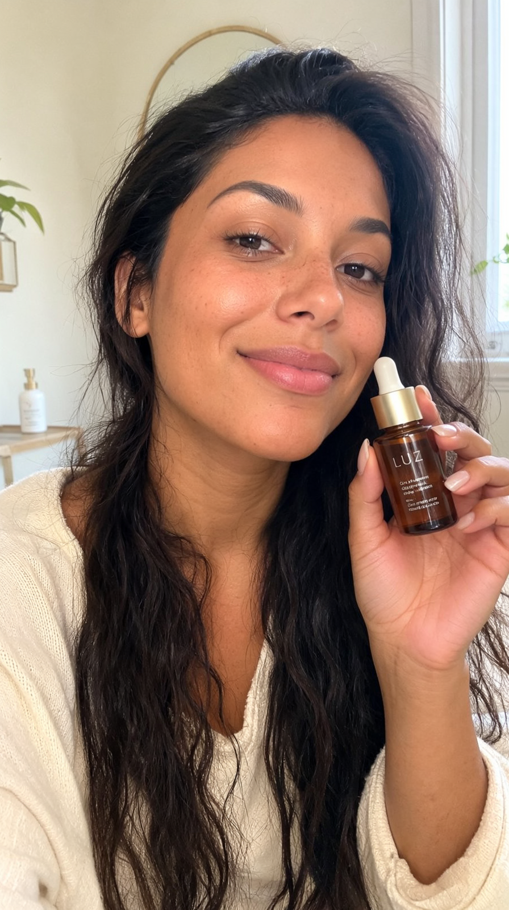
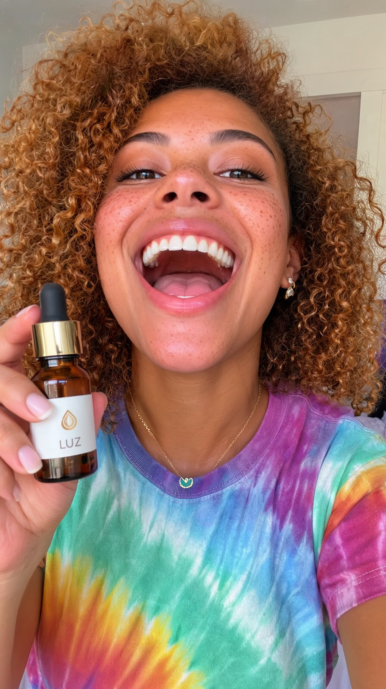

A v10 muda o formato conforme o briefing: 1 produto + 2 influenciadoras digitais, 2 reels verticais de 10 s — um por personagem. A pesquisa da rodada atacou o último reparo (fluido irreal: limitação documentada da área) escolhendo um produto de textura viscosa — o ponto forte da IA — e trouxe a peça que faltava: personagem que fala PT-BR com lip sync, local.
Os entregáveis · 1080×1920 · 10,0 s · LUFS −14


A pesquisa da rodada → decisões
| Achado | Consequência na v10 |
|---|---|
| Fluidos finos são limitação estrutural dos modelos gerativos (WACV 2026); vocabulário de física (viscosidade, tensão superficial) ajuda no que dá | Produto escolhido com textura-heroína viscosa (sérum dourado espesso) — o regime que a IA acerta; fluido fino fica de fora até surgir modelo melhor |
| Lip sync local sem ferramenta nova: o próprio H3 gera fala com boca sincronizada (validado no projeto FLOW) | Receita do influenciador: retrato UGC via MOSS → H3 i2v vertical com a fala no prompt (identidade travada pelo still, um take por reel = zero problema de consistência) · 800–850 s por take de 10 s |
| UGC autêntico = raw, câmera na mão, "filmado no celular" performa melhor que ad polido | Estética phone-look: H3 576×1024 upscaled + grão, micro-sway de câmera no prompt, overlay de marca estilo sticker com #publi |
A jornada
| v1–v9 | v10 (novo formato) | |
|---|---|---|
| Entregável | 1 comercial 20 s por versão (16:9, depois kit h+v) | 1 produto + 2 influenciadoras + 2 reels de 10 s |
| Pessoa | sem (só mãos) | 2 personagens falando PT-BR com lip sync |
| Estética | comercial polido | UGC autêntico (phone-look, #publi, LUFS) |